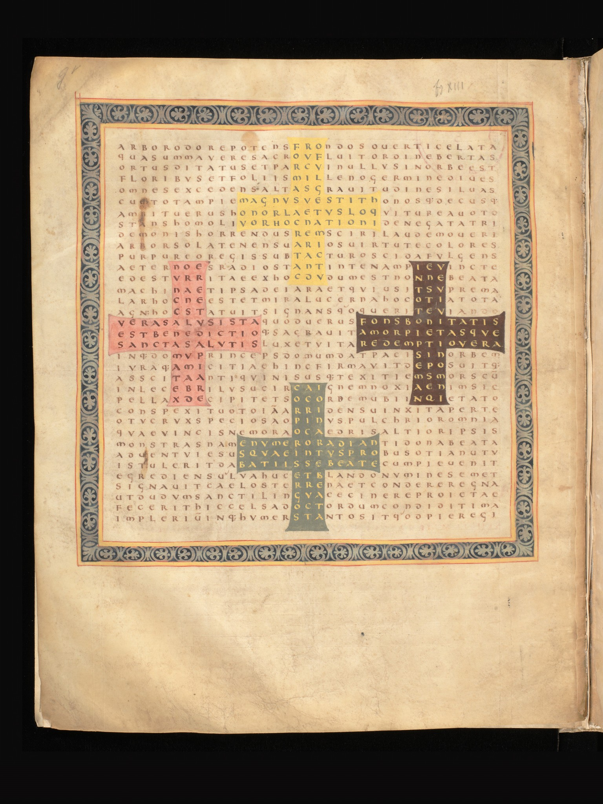

文字图像机器 · 阅读动作展厅Word-Image Machines · A Gallery of Reading
这是一间关于阅读动作的展厅。文字一旦进入路径、轮廓、嵌图、高度，它就不再只是线性信息，而会迫使读者用身体去读：走、看、寻找、升起。每一件互动都只服务一个问题——读者如何用身体读这一页。 This is a gallery about the act of reading. Once writing enters a path, a silhouette, a figure, or a height, it stops being a line of information and asks the reader to read with the body: to walk, to look, to search, to rise. Each interaction serves a single question—how the reader's body reads this page.
《璇玑图》Su Hui's Star Gauge
这台机器：字阵不动，读法在阵中转弯。同一块 29×29 织锦，按不同合法路径取字，重组出一首又一首诗。 This machine: the grid holds still while reading routes turn within it. One 29×29 textile, read along different legal paths, recomposes into poem after poem.
这是《璇玑图》唯一正本读诗器，原地嵌入，不另复制版本。苏蕙《璇玑图》（前秦），29×29 字阵。This is the single canonical reader, embedded in place rather than copied. Su Hui's Xuanji Tu (Former Qin), a 29×29 grid.
来源Source
苏蕙《璇玑图》，前秦。读法依《镜花缘》所列。嵌入读诗器为本展厅正本，逐字逐坐标可读。Su Hui, Xuanji Tu, Former Qin. Reading routes follow those listed in Jinghua Yuan. The embedded reader is the gallery's canonical version, readable character by character.
Πτέρυγες — Simmias《翼》The Wings
这台机器：诗行一长一短，居中排起来，描出一只翼的轮廓——读它是希腊原文，看它是图像。说话者像有翼的爱神，却自称不是年轻爱欲，而是更古老的力量：他不靠暴力，而靠温柔的劝服让天地海让步。 This machine: lines lengthen and shorten, centered into the outline of a wing—read it and it is Greek, look at it and it is an image. The speaker resembles winged Love, yet claims to be not young Eros but an older power who rules not by force but by gentle persuasion.
形状没有在诗里反复解释自己；它直接替诗说出了“翼”。The shape does not keep explaining itself in words; it says “wings” by becoming them.
来源Source
希腊原文逐字抄自 Anthologia Graeca Project，Epigram 15.24（URN tlg7000.tlg001.ag:15.24），Paton edition。共 12 行，不合并不增删。第 5 行保留校勘疑难标记 †；此行有 crux，文本据通行校读作 ὅσσ᾽。公版印本含真正翼形排版：W. R. Paton, The Greek Anthology vol. V (Loeb, 1916–18)。 Greek text copied verbatim from the Anthologia Graeca Project, Epigram 15.24 (URN tlg7000.tlg001.ag:15.24), Paton edition. Twelve lines, neither merged nor altered. Line 5 keeps the editorial crux marker †; the reading is given as ὅσσ᾽. A public-domain printed edition with genuine wing-shaped setting: W. R. Paton, The Greek Anthology vol. V (Loeb, 1916–18).
Hrabanus Maurus《In honorem sanctae crucis》Figure XIII
这台机器（核心展品）：整页拉丁字母照常排满、照常可读，但某些位置的字母同时勾出十字。同一页有两套读法——主诗按行读，嵌入诗沿十字路径读。文字层与图像层叠在同一张字母格上。 This machine (the central exhibit): a full page of Latin letters reads normally, yet certain letters also trace crosses. One page carries two readings—the main poem read line by line, the embedded poem read along the arms of crosses. Text and image lie on the same letter grid.

整页 f.9v 图形诗：35×35 字母格里埋着四个彩色希腊十字。这是展品本体——一页既是诗、又是图。点击放大。The full f. 9v figure-poem: four colored Greek crosses embedded in a 35×35 letter grid. This is the work itself—a page that is both poem and image. Click to enlarge.
这首主诗把十字写成一棵神圣之树：它香气充盈、枝叶繁茂，胜过所有树林；它承载真正的荣耀、救恩、祝福、光、生命与救赎。诗的后半说，基督借十字把和平赐给世界，解除古老死亡和罪的诱惑；这棵十字之树以数字发光，显示基督从童贞女腹中来临、成就先知所唱、并把王权担在肩上。 The main poem imagines the Cross as a sacred tree: fragrant, broad with leaves, richer than every forest, bearing true honor, salvation, blessing, light, life, and redemption. In the second half Christ gives peace to the world through the Cross, loosens the old bonds of death and sin, and lets the tree shine through number: it points to his coming from the Virgin's womb, the fulfilment sung by the prophets, and the rule placed upon his shoulders.
主读法：35×35 字母格按行读，是一首完整主诗。嵌入读法：四个彩色十字区域按特定字序读，读出嵌入诗。读者必须在“读”和“看”之间来回移动，才会发现意义正在字母的排列中发生。 Main reading: the 35×35 letter grid read line by line is one complete poem. Embedded reading: the four colored cross-regions, read in a set order, yield the embedded verses. The viewer must move between reading and looking to discover that meaning happens in the arrangement of the letters.
35 行逐行直译表（展开）35-Line Line-by-Line Translation (expand)
先不要急着看彩色十字。整页 35 行字母本身已经是一首诗——它从 arbor（树）开始，把十字写成一棵胜过众林的神圣之树。现在轻扫的是手稿里的真实行：彩色十字之外的字母也在主诗身体内，十字只是从同一身体里再读出的另一组文字。 Do not rush to the colored crosses. The whole 35-line letter page is already a poem—it begins with arbor, a tree, and imagines the Cross as a sacred tree greater than every forest. The sweep now moves over the manuscript's real lines, not over blank cells: the letters outside the crosses also belong to the main poem, while the crosses are another text read from the same body.
红线说明：互动舞台以真实手稿字母格为底；逐格读序叠层用的是篇若提供的动画映射草案（依 Sánchez-Prieto 2024 Appendix B13 的 8 条嵌入诗）。35 行主诗已按 PL 系开放文本补入逐行拉丁与工作直译；但 Perrin 1997 校勘本与逐格级 35×35 transcription 尚未补，所以页面不把开放行文强行改写成校勘格位。 Red-line note: the interactive stage uses the real manuscript letter field as its base; the reading-order overlay uses the curator's draft animation map (after Sánchez-Prieto 2024, Appendix B13, the eight embedded verses). The 35-line main poem is supplied from the open PL-based text with working literal translations; the Perrin 1997 critical edition and a cell-level 35×35 transcription are still not supplied, so the open line text is not forced into a critical grid.
来源Source
手稿图：Bern, Burgerbibliothek, Cod. 9, f. 9v（Wikimedia Commons / e-codices，Public Domain Mark 1.0）。作品：Hrabanus Maurus，In honorem sanctae crucis（约 810–814），figura XIII（= B13）。嵌文与“四个十字 × 69 = 276”数义见 A. B. Sánchez-Prieto, Religions 15(8):963 (2024)，开放获取。35 行主诗据 Musamedievalis（reference basis text: PL 107, 147-294）与 Latin Wikisource / PL 系文本整理；权威校勘本为 M. Perrin, CCCM 100（在版）。 Manuscript image: Bern, Burgerbibliothek, Cod. 9, f. 9v (Wikimedia Commons / e-codices, Public Domain Mark 1.0). Work: Hrabanus Maurus, In honorem sanctae crucis (c. 810–814), figura XIII (= B13). The embedded verses and “four crosses × 69 = 276” numerology: A. B. Sánchez-Prieto, Religions 15(8):963 (2024), open access. The 35-line main poem is prepared from Musamedievalis (reference basis text: PL 107, 147-294) and the Latin Wikisource / PL tradition; the critical edition is M. Perrin, CCCM 100 (in print).
中文宝塔诗 / 一七令Pagoda Poems · One-to-Seven
这台机器：每一层的字数从一递增到七，文字自己往上垒，长成一座塔——意义还在读，形状已经立起来。这不是一首诗的把戏，而是一种形式：同一“一字至七字”的规则，可以承载茶、诗、雪、月等许多主题。 This machine: each tier grows from one character to seven, and the words stack themselves into a tower—meaning is still being read while the shape already stands. This is not one poem's trick but a form: the same one-to-seven rule can carry tea, poetry, snow, moon, and many themes.